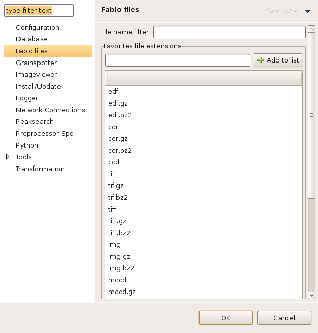

Fabio currently supports the following image file formats :
edf – the ESRF Data Format (EDF) was created at the ESRF. Some documentation is available here but be warned - there is NO official version of EDF, every program implements its own version of EDF. Fabio tries to read as many versions of EDF as possible. Most data taken with ccd cameras at the ESRF will be stored in this format.
cor – this is the EDF format with a different extension name. Spd (sometimes used for doing preprocessing) creates files with .cor extension by default
ccd – this is the EDF format with a different extension name (the Claudio case).
pnm – Portable aNyMap format is part of the Netpbm format family
pgm – Portable GrayMap format is part of the Netpbm format family
pbm – Portable BitMap format is part of the Netpbm format family
tif – Tagged Image File format is a format for storing images. It is now under control of Adobe.
tiff – Tagged Image File format is a format for storing images. It is now under control of Adobe.
img – ADSC file format
mccd – mar ccd file format from Rayonix
mar2300 – file extension .mar345
.dddd – Bruker file format
Any zipped version of the above formats with the extensions .gz or .bz2 will also be read.
To change the files to read and display in the navigator use the Windows -> Preferences -> Fabio files. The preferences windows will be displayed :

Note that aentering a single dot will allow files
with no extension, presumably binary files, to be read and displayed. On the
other hand it will allow every file that has no extension to be displayed,
whether it is an image or not. If you need to read files with no extensions
and this is a problem, then you can keep only binary files in the folder, or
have all the files end in a common pattern, which you can enter above.
Add or remove suffixes to the list of extensions in the text window.
There is help on the wiki (adding new file formats) on how to add support for your own file formats to fabio.